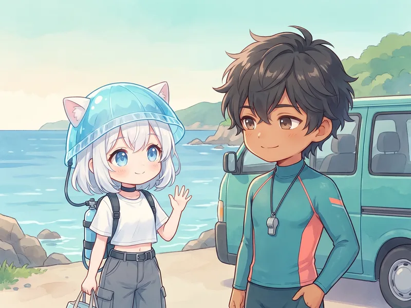
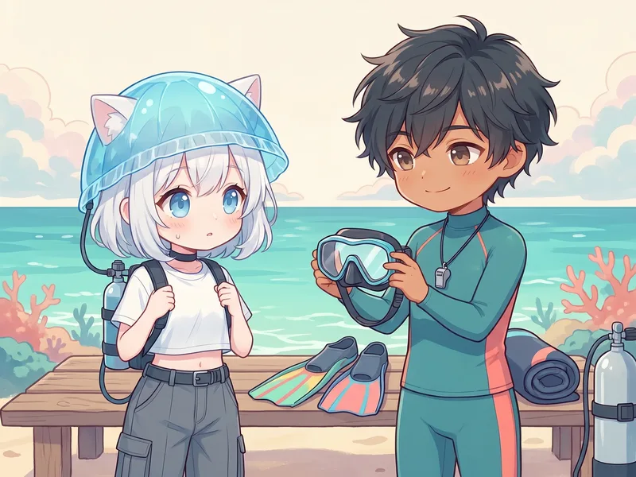
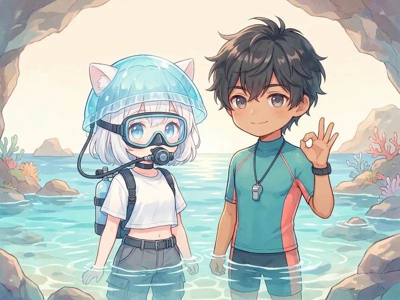
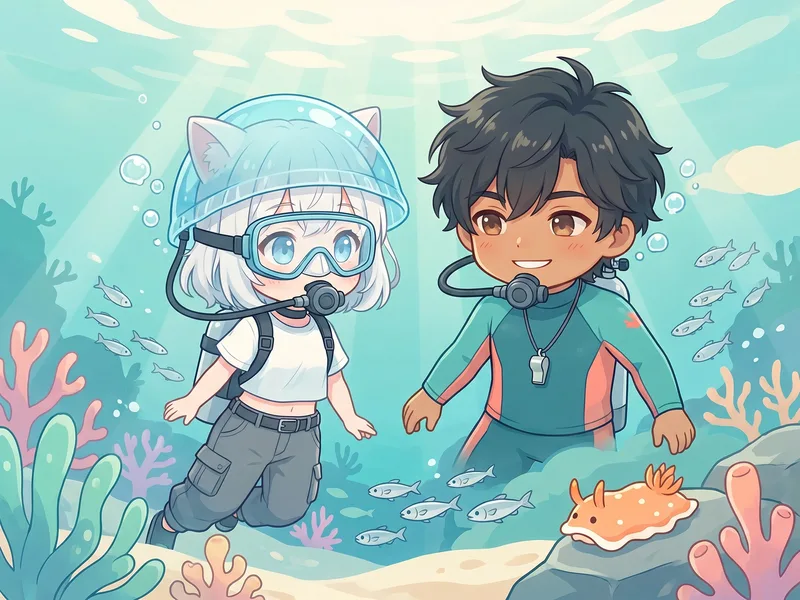

Price

料金と含まれるもの
追加費用が分かりにくい……とならないよう、先にすべてお見せします。
体験ダイビング（半日・約4〜5時間）
¥19,800（税込）
- 基本練習・海洋実習・レンタル器材代など込み。当日の追加料金はありません
- もっと潜りたい方は追加1ダイブ ¥6,600（税込）
- 10歳から参加OK・年齢上限なし
- 持ち物は水着・タオル・サンダル・着替え・日焼け止め・飲み物だけ
- 少人数制。お一人での参加も歓迎です
Flow
当日の流れ
「いきなり海」ではありません。穏やかな浅場で呼吸に慣れてから、少しずつ進みます。
集合

集合・受付
集合場所はご予約時にご案内します。京急「三崎口駅」からの送迎もご予約時にご相談いただけます。
説明

説明と器材あわせ
呼吸の仕方、耳抜き、水中でのサイン。大切なことだけをやさしく説明して、体に合った器材を準備します。
練習

浅場で水慣れ・呼吸の練習
城ヶ島のプールのように穏やかな浅場（限定水域）で、足の着く深さから練習。呼吸に慣れるまでのペースは人それぞれ。急がず進めます。
本番

海の中をおさんぽ（1ダイブ）
インストラクターがずっと横について、城ヶ島の海をご案内。魚の群れやウミウシなど、季節の生き物に会いに行きましょう。
FAQ
よくある質問
泳げなくても大丈夫ですか？
大丈夫です。ダイビングは水泳と違い、器材を使って呼吸します。足の着く浅場で呼吸の練習をしてから進むので、「泳げないけど楽しめました」という方がとても多いです。
一人で参加しても浮きませんか？
お一人で参加される方も多いです。少人数制なので、周りを気にせず自分のペースで楽しめます。
何歳から参加できますか？
10歳から参加できます。上限はありません。ご家族での参加も歓迎です。
天気が悪い日はどうなりますか？
安全を最優先に、当日の海況を確認して開催を判断します。海況により開催場所の変更や日程のご相談をさせていただくことがあります。
体験ダイビングとライセンス取得、どちらがいいですか？
「海の中を一度見てみたい」なら体験、「趣味として続けたい」ならライセンス取得がおすすめです。初心者ガイドで違いを整理しています。迷っている段階でもLINEでご相談ください。

Contact
はじめての海、
はじめての海、
ご案内します
日程や不安なこと、質問だけでも大丈夫です。
LINEまたはお問い合わせフォームからどうぞ。
三浦・城ヶ島の体験ダイビングについて
三浦 海の学校の体験ダイビングは、神奈川県三浦市の城ヶ島エリアで開催しています。ライセンス（Cカード）不要・10歳から参加でき、料金は¥19,800（税込・レンタル器材代込み）です。プールのように穏やかな浅場で呼吸の練習をしてから海に進むため、泳げない方や水が苦手な方も安心してご参加いただけます。
京急線「三崎口駅」が最寄りで、横須賀・横浜方面から日帰り、東京都心からも約60〜75分でアクセスできます。少人数制で、PADIコースディレクターの資格を持つ代表インストラクターが直接ご案内します。